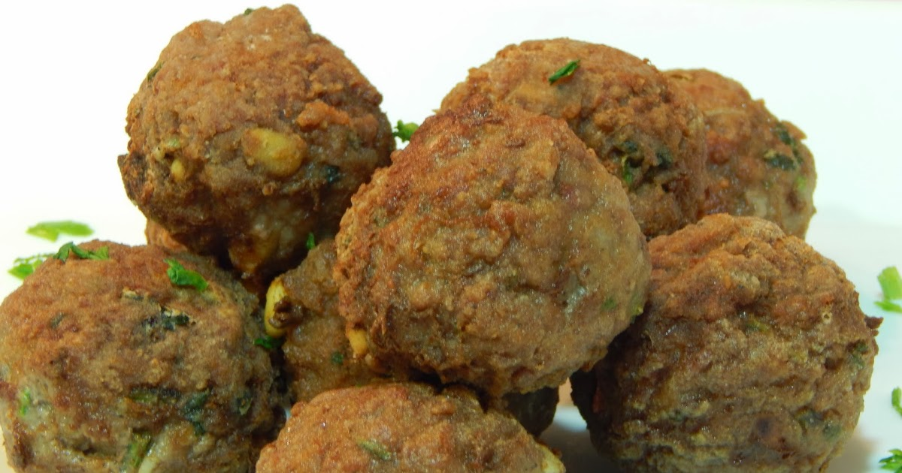
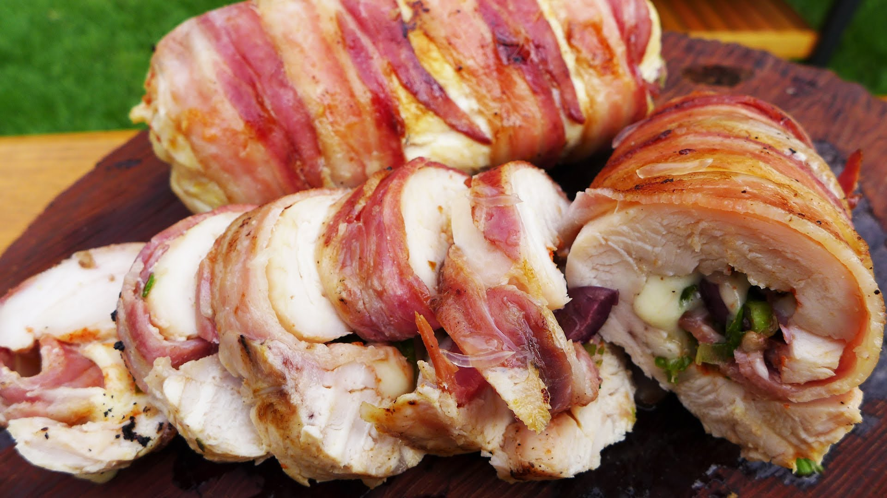

Ricette di Casa
Disfruta de una buena comida con nuestras tips y recetas
Favoritos:
Historial:
Albondigas Caseras
15 de Mayo del 2017 Las albóndigas caseras es una de las recetas más típicas de las abuelas o de las madres, esta receta que os voy a dar es la receta de mi madre, que imagino que la habrá heredado de mi abuela. Es muy sencilla de hacer pero seguro que os salen genial.
Van acompañadas de una salsa fácil para albóndigas y creo que esto marca muchas veces la diferencia al igual que una buena carne de calidad para las mismas. El acompañamiento perfecto para las albóndigas en salsa son las patatas fritas, ¿o no? Creo que llegar a casa de la abuela y ver una plato de albóndigas con las patatas fritas empapadas en la salsa es un manjar de dioses.
Espero que os guste la receta de albóndigas en salsa que os traigo hoy, y recordad que siempre que queráis hacer cualquier propuesta respecto a este tipo de recetas tradicionales, las acogeré con los brazos abierto.

- Carlos332:
- Blog con poca informacion, no me gusto para nada.

- Maria32:
- Excelente el blog, las recetas son muy faciles y simples.
- JFK-11:
- Buenas recetas, el blog es muy completo.
Pamplona de Pollo
15 de Mayo del 2017 Apoyar las supremas sobre una tabla y hacerles una incisión, polloabriéndolas como libros (sin llegar hasta el final). Hacer otro corte más sobre cada lado del libro, para abrirlas aún más, como en las balotinas. Apoyar cada suprema sobre papel film, cubrirla con el mismo y, con la ayuda de un martillo de cocina, golpear la carne (delicadamente) para agrandarla un poquito más, y darle uniformidad. Reservar
Para el relleno pelar los morrones, cortarlos en trozos grandes y descartar las semillas. Cortar en cubos el queso y en tiras el jamón. Mezclar los morrones con el jamón y el queso. Lavar el redaño en abundante agua tibia. Ubicarlo sobre la mesada, disponer una capa de unos 60 centímetros de lado, y si en algunos lugares está roto, agregarle remiendos de la misma telita
- Carlos332:
- Blog con poca informacion, no me gusto para nada.
- Maria32:
- Excelente el blog, las recetas son muy faciles y simples.
- JFK-11:
- Buenas recetas, el blog es muy completo.